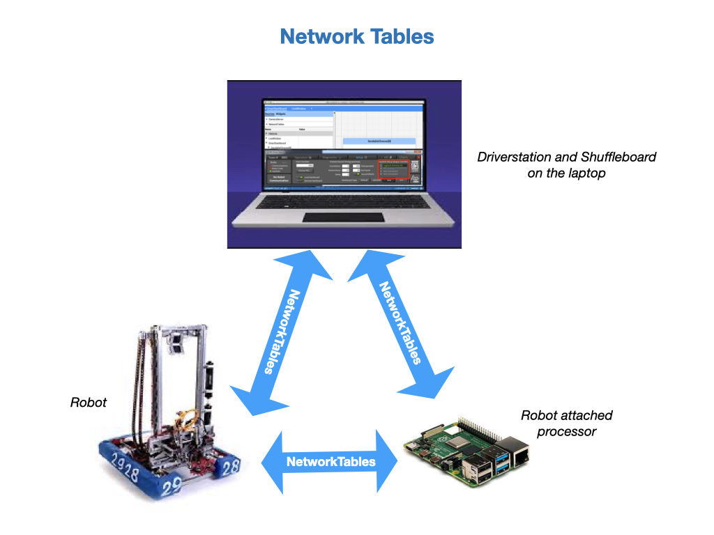
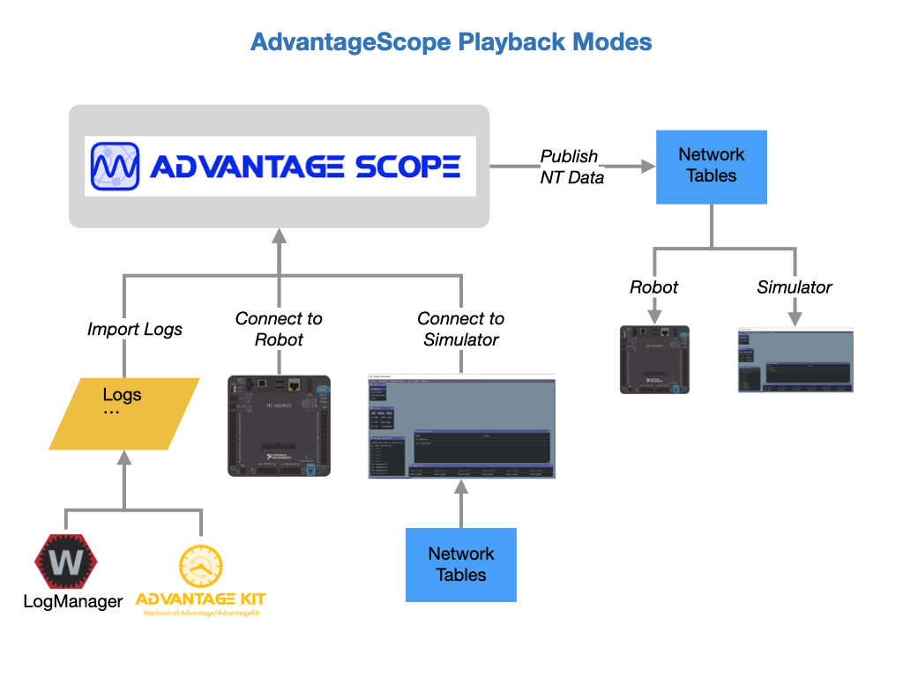
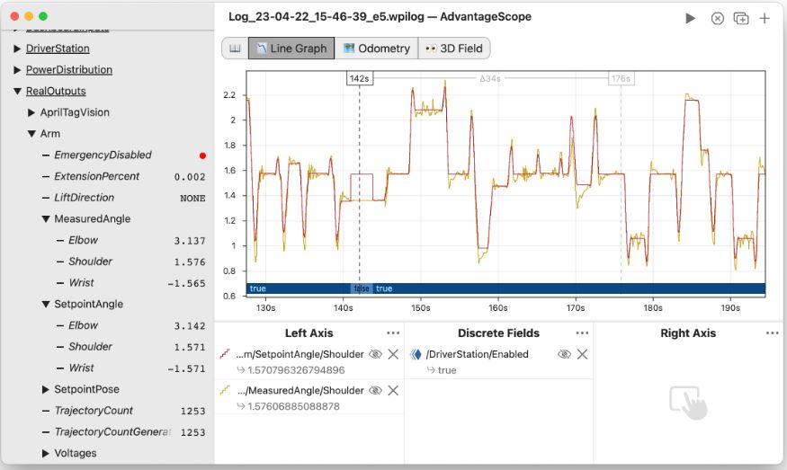

Telemetry
When you are running code on a robot it’s very useful to track how data is passing through the system as it operates. This is referred to as Telemetry, which is the science of automatically collecting measurements and transmitting them to a receiving station. Telemetry is a critical tool for fine tuning a system and figuring out why a system isn’t operating the way it should. Remember, that robots are data driven machines, so in order to test our code we’ll need to see the data.
When creating Commands and Subsystems for our robot it’s important to build in telemetry functions right from the start. When testing your code on the robot things often do not go as expected at first. In order to solve the problem quickly it’s good to have the diagnostic data readily at hand. For simple data structures you can directly output values to the SmartDashboard from the periodic() loop.
Network Tables
Network Tables are used to communicate between the robot, driver station, and any attached coprocessors, such as a Raspberry Pi or Jetson. Network Table values are automatically distributed to all of the systems that are connected to them. They’re a core technology used for transmitting telemetry data between the robot and dashboards.
NetworkTables classes are instantiated automatically when your program starts. There are some default tables that are created automatically at start up. As you add telemetry to your robot you’ll be placing data values into these NetworkTables.
Shuffleboard
FRC has developed a tool called Shuffleboard, which allows you to view all of the data that’s generated from the robot in Real-Time. It also enables you to send data to the robot in order to make commands more flexible and change the behaviour of the robot.
The documentation explains how to Start Shuffleboard depending on your development laptop.
Prior to the release of the Shuffleboard tool FRC used an application called SmartDashboard. To maintain backwards compatibilty SmartDashboard has been incorporated into Shuffleboard. From the robot code SmartDashboard is still the easiest way to output telemetry data.
Important
SmartDashboard has been deprecated and will be removed from WPILIB in 2027. You should focus on using Shuffleboard!
The Sendable Interface
The FRC documentaton has instructions on Adding Telemetry to Robot Code. Most of this is done using the Sendable interface provided by WPILib that’s documented in Robot Telemetry with Sendable. The Sendable interface automatically sends telemetry values every robot loop, removing the need to handle the periodic logic of sending and receiving values from the dashboard.
For simple data structures however, you can directly output values to the SmartDashboard from the periodic() loop, which is how we’ll be doing it in the lab.
Advantage Scope
Advantage Scope is a robot diagnostics, log review/analysis, and data visualization application for FIRST Robotics Competition teams. It reads logs in WPILOG, DS log, and RLOG file formats, plus live robot data viewing using NT4 or RLOG streaming. Here’s the online documentation of AdvantageScope.
Advantage Scope can also be used while you are simulating robot code. It connects directly with the simulator and can provide a representation of the competition field and the location of your simulated robot on that field in both 2D and 3D views. In additoin, it will display all of the data in Network Tables and allow you to graph these variables in real time-as you are testing:
One of the best kept secrets about Advantage Scope is that you can change data while running your test. More about that in the Advantage Scope deep dive later in your training.
Code WalkThrough
Let’s walk through the example code on how to display telemetry data. Take a look at the Intake subsystem in the ProgTrain1 example code. The first thing to do is to define a new tab on the Shuffleboard to hold your data we will call it intakeShuffleboard.
private final ShuffleboardTab intakeShuffleboard;
Then we define variables to become our Shuffleboard widgets to place on our new tab.
/* Shuffleboard entrys */
private GenericEntry intakePosition;
private GenericEntry intakeVelocity;
private GenericEntry intakeAppliedVolts;
private GenericEntry intakeSupplyCurrent;
private GenericEntry intakeTorqueCurrent;
private GenericEntry intakeTemp;
private GenericEntry intakeState;
Next in the Intake Constructor we instantiate the Shuffleboard tab and we add the widgets to the tab and connect the variables we defined in your last code-block:
//Define Suffleboard Tab for this Subsystem
this.intakeShuffleboard = Shuffleboard.getTab("Intake");
intakeVelocity = this.intakeShuffleboard.add("Velocity (rot per s)", 0.0).getEntry();
intakePosition = this.intakeShuffleboard.add("Position (rot)", 0.0).getEntry();;
intakeSupplyCurrent = this.intakeShuffleboard.add("Supply Current", 0.0).getEntry();
intakeTorqueCurrent = this.intakeShuffleboard.add("Torque Current", 0.0).getEntry();
intakeTemp = this.intakeShuffleboard.add("Motor Temp", 0.0).getEntry();
intakeAppliedVolts = this.intakeShuffleboard.add("Applied Volts",0.0).getEntry();
intakeState = this.intakeShuffleboard.add("State","").getEntry();
and finally, in our UpdateTelemetry method, we take the motor data in our ioStats class and put it into the variables (widgets) to display the data on the ShuffleBoard. That’s all there is to it:
/************************************************
* Update the Shuffleboard with Motor Statistics
************************************************/
private void UpdateTelemetry() {
intakeVelocity.setDouble(ioStats.rollerVelocityRpm);
intakePosition.setDouble(ioStats.rollerPositionRads);
intakeSupplyCurrent.setDouble(ioStats.rollerSupplyCurrentAmps);
intakeTorqueCurrent.setDouble(ioStats.rollerTorqueCurrentAmps);
intakeAppliedVolts.setDouble(ioStats.rollerAppliedVolts);
intakeTemp.setDouble(ioStats.rollerTempCelsius);
intakeState.setValue(currentState.name());
}
Important
Take extra care to get the units right in the display. Some are reporting in Rotations or Volts or Rotations per second. Most new programmers stumble trying to keep the units correct when they display the data on the Shuffleboard.
References
FRC Documentation - Telemetry
FRC Documentation - Shuffleboard
FRC Documentation - SmartDashboard
FRC Documentation - Network Tables